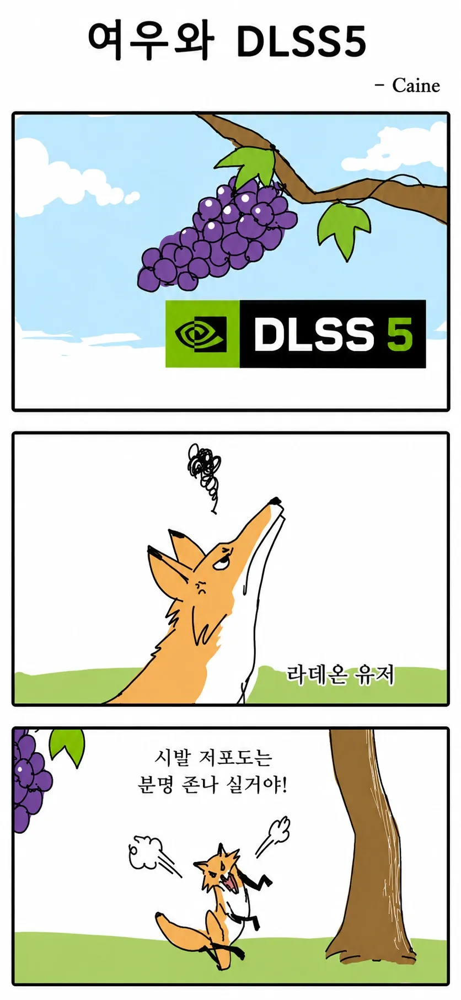

사실상 5080부터라함

사실상 5080부터라함
5090는 700~800만원 하는데 걍 하지말란거네
그러면 진짜 ai 슬롭 아님?
해상도에 따라 다르다
https://youtu.be/5l2VJFXxUcw?si=QkDs0VfGeUK-Bwfo
비명소리 왜 이러냐 총에 맞았는데 어! 이러고 마네ㅋㅋㅋ
70ti도 힘든가?
70ti 쓰는데 잘 됨. 해상도가 가장 중요하고 게임이랑 DLSS5 필터 강도에 따라 프레임 20~50% 차이
5080도 힘들어해
60시리즈부터나 사용 가능한거임?
4090이랑 5060 비교해보면 최소 6070ti 이상이어야 할듯? 게다가 50번대 슈퍼 포기 선언도 그렇고 60번대도 얼마나 업글이 되있을지 아무도 모르는게 문제임
5090 전용이야 그럼?

솔직히 지금은 5070ti도 너무 비싼데 그게 그나마 가성비 최고점인 상황임
그러니 70ti로 안될거면 걍 포기하는게 편함
숫자만보겸 내 6700이 5080보다 높은데 어떻게 안될까?
90라인이 20%~30%날아가고 70ti라인이 50%날아가고
4천번대라인도 모딩 우회해서 사용해보니까 50%날아간다던데
정식버전 나오면 최적화가 우선일 듯 ㅋㅋㅋㅋ
하지만 신제품은 이제 당분간 나오지도 않을꺼잖아 ㅅㅂ크아악
70샤 쓰는데 잘 된다. 80이랑 vram도 같고 그리 큰 성능차가 안나는 것도 한몫 하나봄.
부럽다.. 나도 램값만 안올랐으면 70샤 사는건데 결국 60샤로 타협함
5090도 힘들어핟너거같은데
5070ti도 안됨..?
70ti 쓰는데 잘 됨. 해상도가 가장 중요하고 게임이랑 DLSS5 필터 강도에 따라 프레임 20~50% 차이 난다 정도?
잉 필터 강도에 따라 프레임 차이가 나??? 난 왜 똑같지
프렘 드랍 일어나는 겜도 있고 안 큰 게임도 있는것 같아
아니 게임에 따라가 아니라
필터 강도에 따라 프레임이 20~50프로
차이난다면서 뭔 갑자기 다른 얘기여
강도 세게 먹이나 약하게 먹이나 프레임 똑같더만
해상도 몇으로 했음?
4k
오 그게 되는구나 땡큐
70ti인데 프레임젠있어서 실사용 잘하고있음 아직 베타버전이라서 기다려봐야할듯
4090 프젠 잘 돌아감
dlss 5 사양 높은건 맞는데 텍스쳐나 그림자 옵션타협보면 구져진 그림자 텍스쳐도 보정해줘서 쓸만함
rtx라고 2000번대 나온거 안정적으로 돌리기 시작한게 5000라인이니까 8060 존버한다
그래팩카드보다는 게임 최적화 꼬라지가 가장 큰 문제긴함..
웃긴 유머네 ㅋ
개십 그럼 수냉쿨러 필수겠네잉
얼탱이없네진짜 저번달에 5080 본컴팔고
가성비컴 맞췄더니 ㅇㅈㄹ
맛좀 볼수있었는데 시바존나시네
4k 5080인데 잘 되려나
컴 너무 비싸ㅠㅠ 다시 싸지려나
4070tis는 안됨?
ㄹㅇ 4천번대 메인스트림도 걍 짜져있어야 함?
5000번대부터 지원이라는데 아래 시리즈들도 지금 풀린거 되긴함
프레임은 보장못함
히히 ps6에는 다 넣어 주겠지? Ps6 나올때까지 존버한다
(300만원)
Ps6에는 fsr이 들어가겠지
내가 GTX660쓰는데 잘된다~
5080도 혀 끝 으로 간신히 침만 뭍힐 수준일껄?